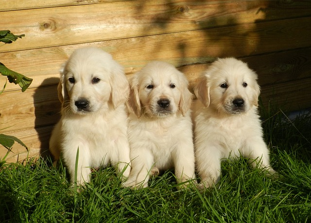

Editing Images
Image 1

Cropped out most of the background, to focus on the puppies.
Image 2
This image was resized.
Image 3
I vertically flipped this image.
Image 4
I cropped out the the path to focus on the trees..
Image 5
I horizontally flipped this image.